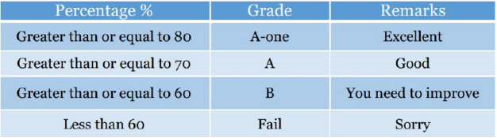

4. Write a program to take input the marks obtained in three subjects & total marks. Compute & show the resulting
percentage on your page. Take percentage & compute grade as per following table:

Show the total marks, marks obtained, percentage, grade & remarks like: